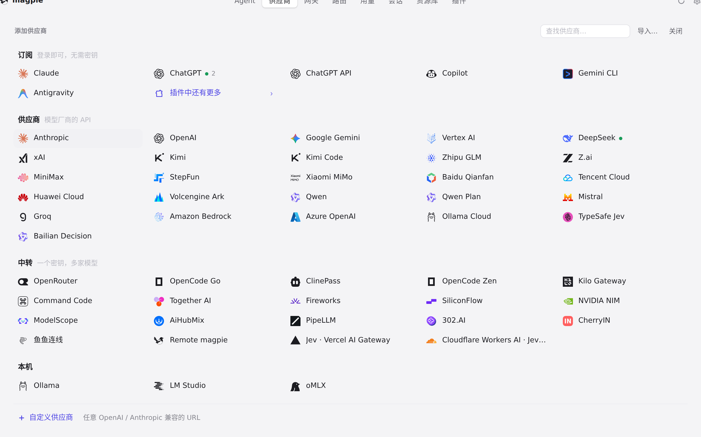
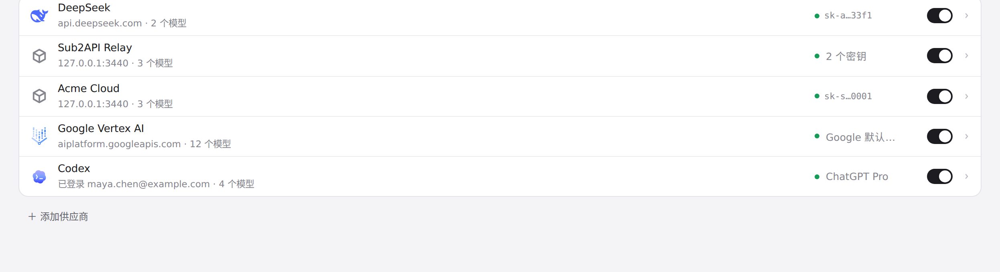
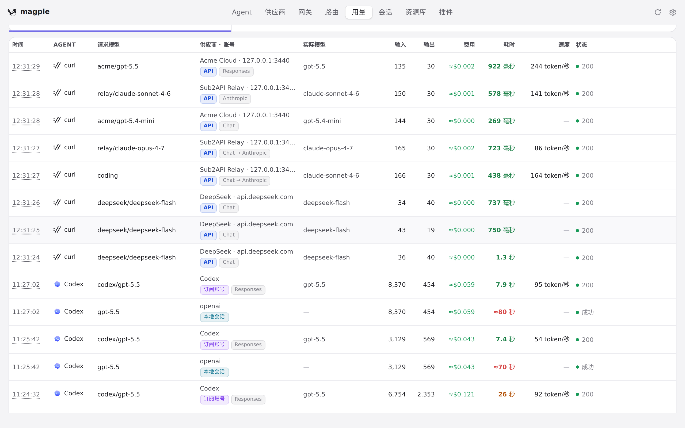

#1122 界面预览
commit 770b8e0 · 回到 PR · 把 Google Vertex AI 作为供应商预设加入界面：添加弹层里它的磁贴打开一个用「项目 ID / 位置 / 凭据文件 / 服务账号」代替 API 密钥的编辑器，未填项目 ID 时保存被拒，端点按项目与位置拼出，列表行的标记写凭据来源或「需要项目」；另外「用量 → 请求」里走 Gemini streamGenerateContent 的请求现在标为 Gemini。
红线是鼠标走过的轨迹，红色圆环是一次点击；底部文字是这一步在做什么。空格暂停，← → 逐段查看。

Google Vertex AI 预设的编辑器与保存后的行 · 添加弹层里的供应商磁贴
 Google Vertex AI 预设的编辑器与保存后的行 · API 密钥的位置换成项目 ID、位置、凭据文件、服务账号
Google Vertex AI 预设的编辑器与保存后的行 · API 密钥的位置换成项目 ID、位置、凭据文件、服务账号
 Google Vertex AI 预设的编辑器与保存后的行 · 未填项目 ID 时的编辑器
Google Vertex AI 预设的编辑器与保存后的行 · 未填项目 ID 时的编辑器
 Google Vertex AI 预设的编辑器与保存后的行 · 填了项目 ID 后出现的端点
Google Vertex AI 预设的编辑器与保存后的行 · 填了项目 ID 后出现的端点

Google Vertex AI 预设的编辑器与保存后的行 · 列表里 Google Vertex AI 一行的凭据标记

用量里 Gemini streamGenerateContent 的协议标记 · 「请求」列表里每条请求标出的协议